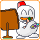

I had enough free time during mid-twenties and I draw many pictures. I sometime draw visual diary or birthday card.
[Farewell] When I was twenty years old, I was hospitalizated for half of year and go to hospital two years. After that, I restrained to ride on motercycle forever. However my life was changed to good-way in this opportunity, this actident is not bad. Oct. 1998.Color-Ink, size B6
[Boyish] There is poster contest regularly in my company. I drew this picture in a day. In my hurry, sorry about that I forgot to draw some part. This time's theme was ladies activity. with my dream Super Seven. Mar.1997 Poster color with air brash. size:B4
[Harvest] When I visited to Shinshu in Japan, I found the pumpkins that are arranged perfectly designed in car parking. The view was orange because I saw these pumpkins at dusk. just like autumn is really here. Jan.1997 Colored pencil. size:S88
[YAMAHA FZR] I rode this motor-cycle for two years. The day of 6 days before the 20th birthday that was fine day, Although it was running with the sufficient feeling by motorbike, it crashed into a certain German vehicle. I led the hospitalization life for 183 days. However since there was no photograph which is running by motorbike, this was drawn so that that day that was pleasant might not be forgotten. Nov.1990 Colored pencil. size:S87
[SUNSET] During hospitalization, since I wanted to go to the sea very much, I drew this. Since it drew in the sickroom, other patients do a paints smell thought. Nov.1990 Water color. size:S87
I was so superised that my scketch is brodcasting on television every weekend. It is a part of wall but I forcusing to watch just a picture not TV content sorry ;P Thank you Fuji Television, I am happy.
[Motocross team WASTE]'s poster. In fact, I played motocross when I was student. It has participated also in the grass race several times. Although it is a play grade. The T-shirt of this picture was sold at the school festival. Jan. 1991 Poster color. size:S87
[Touring] White one is me. YAMAHA YZ250. These days, a book called the heart cocktail got from the friend was read, and such a colorful touch became favorite. Jan.1991 Poster color. size:S87
[seaside TOYOTA TRUENO] For a long time, I had lived near the sea. Recently, I have lived in here that is long distance from sea. because the sea became nostalgic and I drew this. Jun.1994. Poster color. size:A2
My first motercycle is Kawasaki GPZ400R called as Ninja. Big and heavy. I have no picture as my memory, so I draw and keep memory it. 1989.12. Collored pensill. Poster card.
Thank you for your visiting. I'm very glad.
| Illustrations | Sketch book | 3D graphics |